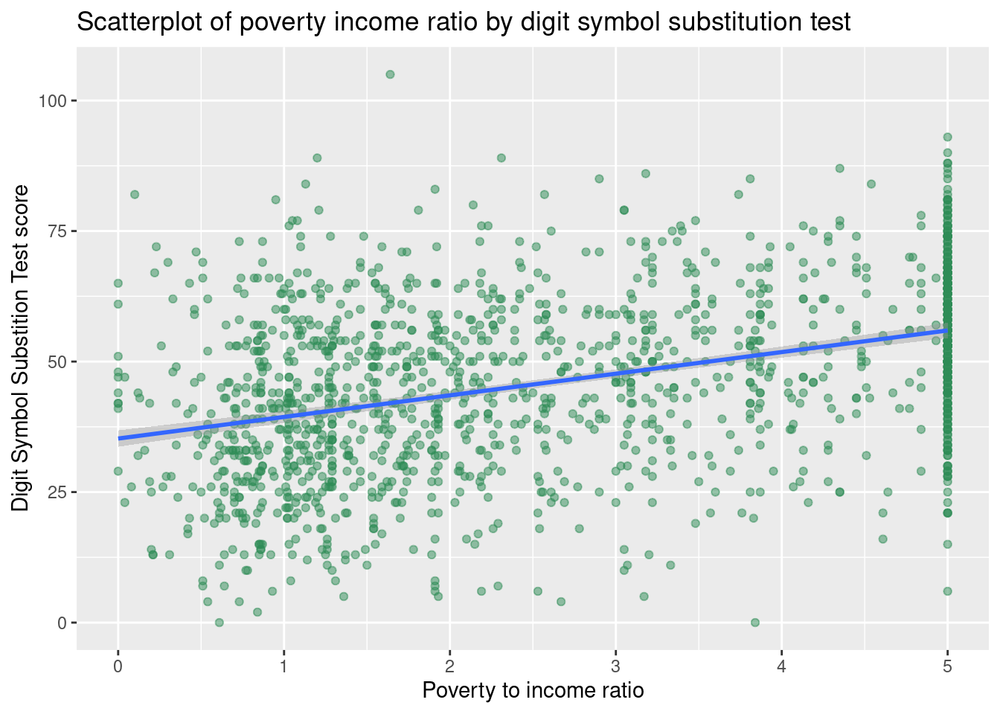
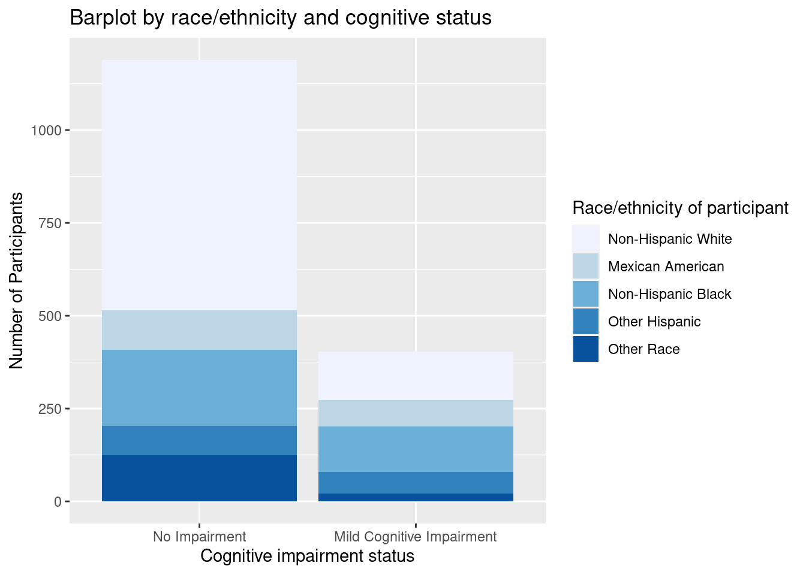
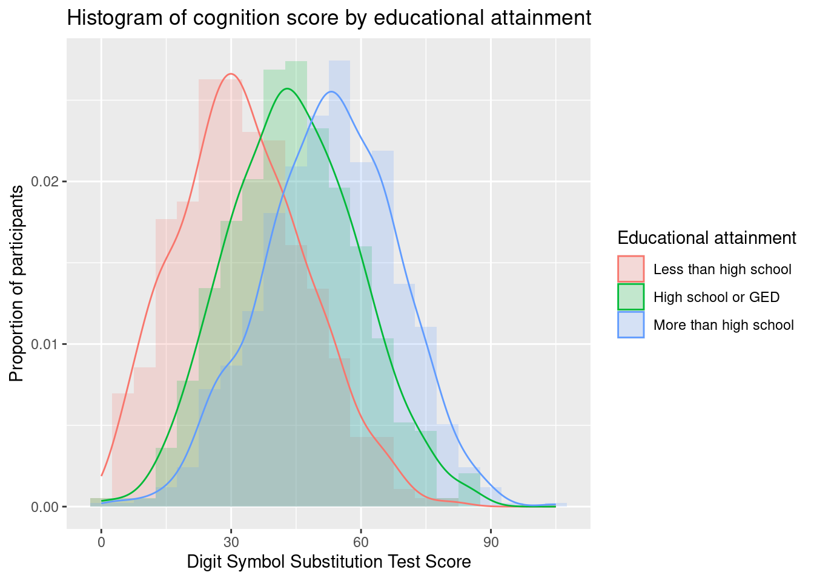
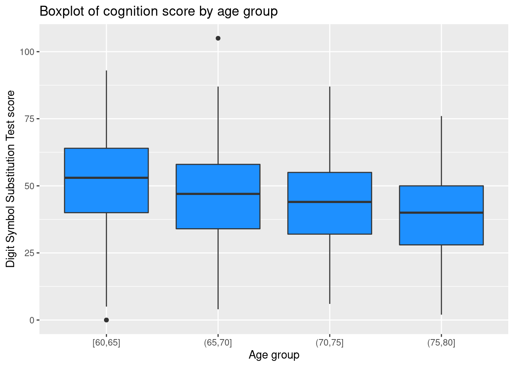
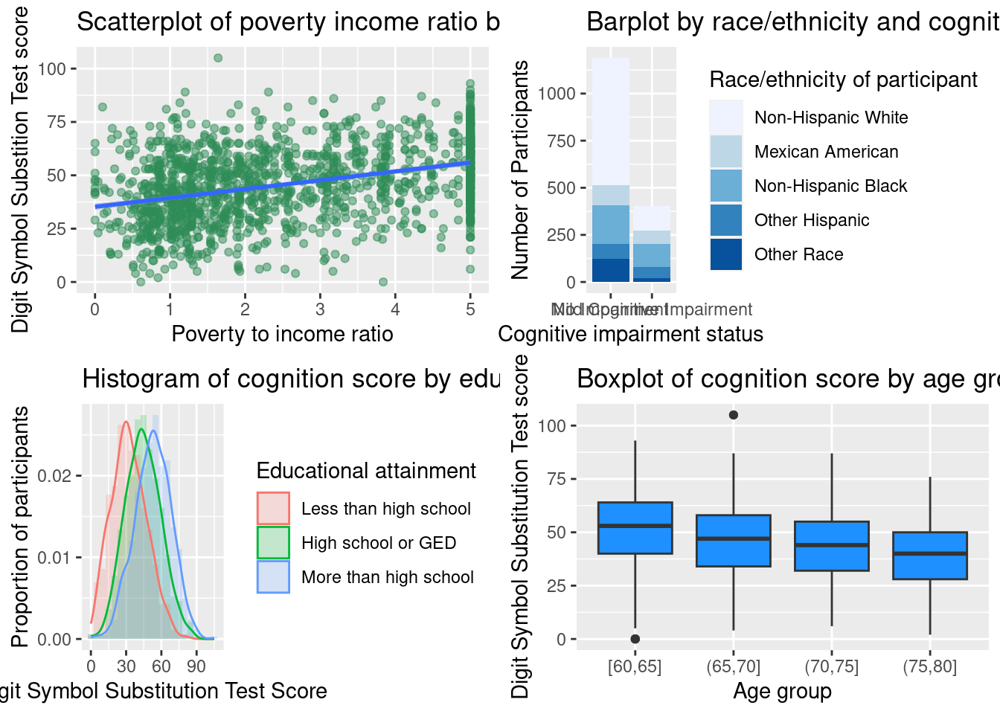

##### Load packages for this assignment, do this every time
library(tidyverse)
library(here)
library(ggpubr)
library(viridis)
library(RColorBrewer)EPID 674: Graphing in R
Homework 3 Answer Key
Load packages
Load data
# Load saved NHANES homework dataset from the project files. This is the dataset we built in homework 2
load(here(("nhanes_homework_dataset.rda")), verbose = TRUE)Loading objects:
nhanes_homework1. Create a scatterplot with a line of best fit
Create a scatter plot with poverty-income ratio (variable: INDFMPIR) on the x-axis and digit symbol substitution test (variable: CFDDS) on the y-axis. Add a line of best fit for this relationship.
# Add a linear fit
ggplot(nhanes_homework,
aes(x = INDFMPIR,
y = CFDDS)) +
geom_point(alpha = 0.5,
color = "seagreen") +
geom_smooth(method = lm) +
labs(x = "Poverty to income ratio",
y = "Digit Symbol Substition Test score",
title = "Scatterplot of poverty income ratio by digit symbol substitution test")
Interpret the figure: Yes, there does appear to be a relationship between poverty to income ratio and digit symbol substitution test score. Higher values of poverty to income ratio have higher digit symbol substitution test scores.
2. Create a bar plot
Create a bar plot where cognitive impairment status (variable: MCI) is on the x-axis and the bar fill is by race/ethnicity (variable: race_eth). Try updating the bar colors.
# Optional, drop the participants with missing cognition values
nhanes_cognition <- nhanes_homework %>%
drop_na(MCI)
# Make the bar plot
ggplot(nhanes_cognition,
aes(x = MCI,
fill = race_eth)) +
geom_bar() +
labs(title = "Barplot by race/ethnicity and cognitive status",
x = "Cognitive impairment status",
y = "Number of Participants",
fill = "Race/ethnicity of participant") +
scale_fill_brewer() 
Interpret the figure: There appears to be a higher proportion of Non-Hispanic White participants in the no impairment category relative to the mild cognitive impairment category.
3. Create a histogram or density plot
Make a histogram or density plot with the digit symbol substitution test score (variable: CFDDS) on the x-axis. Have the fill and/or color of the plot by category of educational attainment.
# Optional, drop participants missing education
nhanes_education <- nhanes_homework %>%
drop_na(education)
# Overlapping histograms
ggplot(nhanes_education,
aes(x = CFDDS,
fill = education,
y = ..density..)) +
geom_histogram(binwidth = 5,
position = "identity", #default position is stack
alpha = 0.2) +
geom_density(aes(color = education),
alpha = 0) +
labs(x = "Digit Symbol Substitution Test Score",
y = "Proportion of participants",
title = "Histogram of cognition score by educational attainment",
fill = "Educational attainment",
color = "Educational attainment")
Interpret the figure: Within each educational attainment group, the distribution of digit symbol substitution score is relatively normally distributed.
4. Create a boxplot or violin plot
Make a boxplot or violin plot with the digit symbol substitution test score (variable: CFDDS) on the y-axis. Split the boxes or violins by the age group (variable: age_group) on the x-axis. Try filling the boxes with the color of your choice
# Boxplot split by age groups
ggplot(nhanes_homework,
aes(x = age_groups,
y = CFDDS)) +
geom_boxplot(fill = "dodgerblue") +
labs(x = "Age group",
y= "Digit Symbol Substitution Test score",
title = "Boxplot of cognition score by age group")
Interpret the figure: Yes, there does appear to be a relationship between age group and digit symbol substitution test. Higher age gropus have lower digit symbol substitution test scores.
5. Create a multipaneled plot
Create a multipaneled plot containing each of the previous plots from questions 1-4 (a barplot, a histogram, a boxplot or violin plot, and a scatterplot)
scatter <- ggplot(nhanes_homework,
aes(x = INDFMPIR,
y = CFDDS)) +
geom_point(alpha = 0.5,
color = "seagreen") +
geom_smooth(method = lm) +
labs(x = "Poverty to income ratio",
y = "Digit Symbol Substition Test score",
title = "Scatterplot of poverty income ratio by digit symbol substitution test")
bar <- ggplot(nhanes_cognition,
aes(x = MCI,
fill = race_eth)) +
geom_bar() +
labs(title = "Barplot by race/ethnicity and cognitive status",
x = "Cognitive impairment status",
y = "Number of Participants",
fill = "Race/ethnicity of participant") +
scale_fill_brewer()
hist <- ggplot(nhanes_education,
aes(x = CFDDS,
fill = education,
y = ..density..)) +
geom_histogram(binwidth = 5,
position = "identity", #default position is stack
alpha = 0.2) +
geom_density(aes(color = education),
alpha = 0) +
labs(x = "Digit Symbol Substitution Test Score",
y = "Proportion of participants",
title = "Histogram of cognition score by educational attainment",
fill = "Educational attainment",
color = "Educational attainment")
box <- ggplot(nhanes_homework,
aes(x = age_groups,
y = CFDDS)) +
geom_boxplot(fill = "dodgerblue") +
labs(x = "Age group",
y= "Digit Symbol Substitution Test score",
title = "Boxplot of cognition score by age group")
ggarrange(scatter, bar, hist, box,
nrow = 2,
ncol = 2)
Interpret the figure: The histogram of cognition score by educational attainment is in the lower left hand corner.